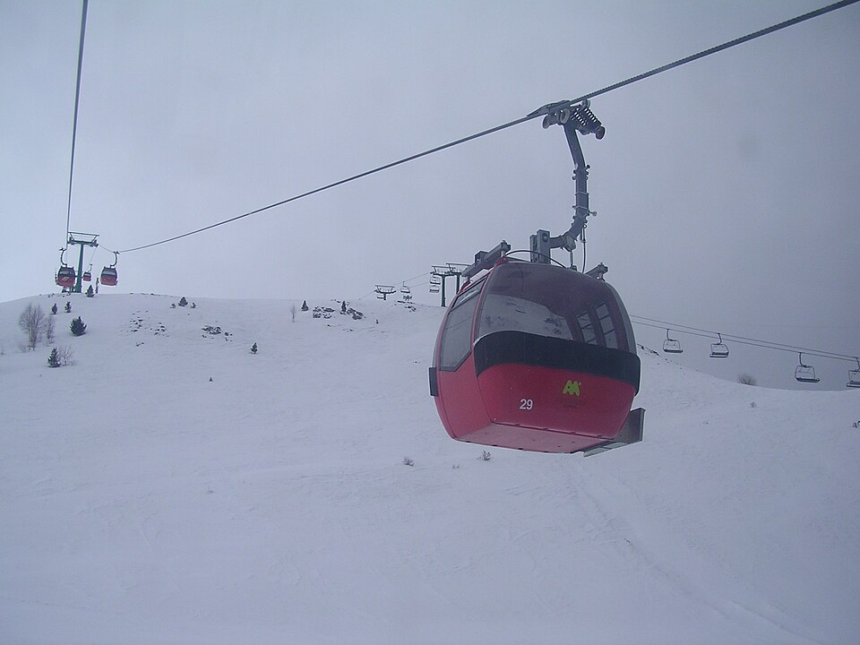
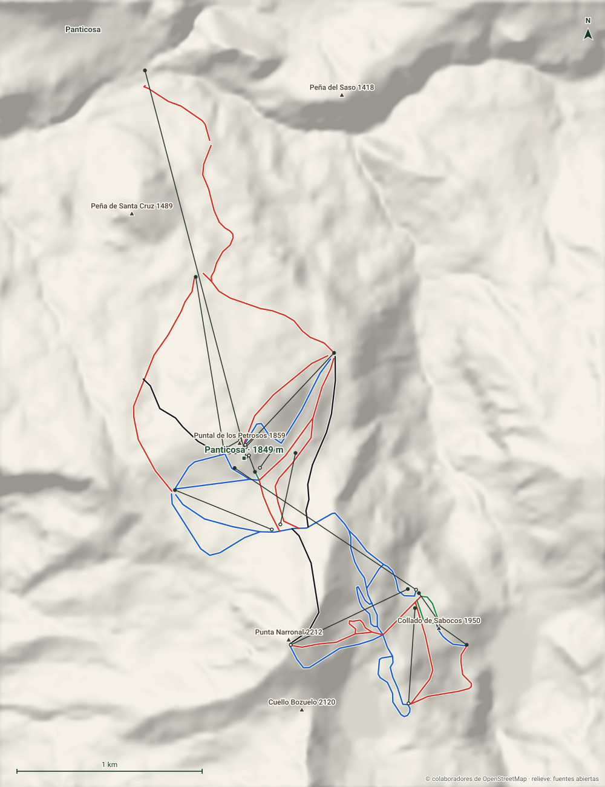

Panticosa
Valle de Tena · Huesca
- Pistas
- 18 km
- 36 trazados
- Cota máxima
- 2203 m
- mínima 1145 m
- Desnivel
- 1058 m
- esquiable
- Remontes
- 15
- 1 telecab. · 5 telesillas
Una telecabina sube desde el mismo pueblo de Panticosa hasta las pistas. Estación familiar del Valle de Tena, con forfait conjunto con Formigal.
Foto: Willtron · CC BY-SA 3.0 · Wikimedia Commons
Hoy
Panticosa ahora mismo
Estado de pistas y remontes según el último parte publicado, y las webcams de la estación.
Webcams
Estado y webcams de Infonieve.es, a partir de los partes y cámaras de cada estación. Antes de salir, confírmalo en la web oficial o en su parte de nieve.
Próximos 7 días
Nieve y tiempo previstos
Previsión para la cota alta (2203 m) y la base (1145 m).
Previsión de modelos meteorológicos de Open-Meteo (CC BY 4.0). Es previsión, no observación: lo que hay abierto hoy está en el estado de pistas.
Plano
Plano de pistas
Pasa el cursor o toca una pista o un remonte para ver su nombre, longitud y desnivel.
Trazados: © colaboradores de OpenStreetMap (ODbL). No es el plano oficial de la estación ni refleja aperturas.
Mapa 3D
Panticosa en tres dimensiones
Relieve real, fotografía aérea, sol y sombras, viento e inclinación. Se carga solo cuando lo pides porque pesa.

Pantalla completa
Recomendado con wifi. En móvil, el mapa completo va mejor en la app.
Pistas
36 pistas, 18 km
La más larga con nombre es Mazaranuala (1,3 km, roja).
VerdeMuy fácil
3 pistas · 0,4 km
AzulFácil
15 pistas · 7,1 km
Ver nombres
- Hoz de Jaca 0,9 km
- Cuartalé 0,8 km
- Fobas I 0,8 km
- Marmotas 0,6 km
- Fobas del Pueyo 0,5 km
- Martín Belio 0,4 km
- Los Corzos 0,3 km
RojaIntermedia
15 pistas · 8,2 km
Ver nombres
- Mazaranuala 1,3 km
- Los Asnos 0,8 km
- Estrimal 0,8 km
- Stadium 0,7 km
- Fora O''Maduro 0,7 km
- Ibón II 0,6 km
- Ibón I 0,6 km
- Selva Verde 0,5 km
NegraDifícil
3 pistas · 2,3 km
Ver nombres
- Tubo del Mandilar 0,9 km
- Valle de Tena 0,7 km
- Tubo del Espejo 0,6 km
Remontes
15 remontes
El de mayor desnivel: Telecabina Panticosa, 707 m.
| Remonte | Tipo | Longitud | Desnivel | Llegada |
|---|---|---|---|---|
| Telecabina Panticosa | Telecabina | 2155 m | 707 m | 1852 m |
| Petrosos | Telesilla | 957 m | 319 m | 1843 m |
| Javier Escartín | Telesilla | 701 m | 272 m | 2202 m |
| Corona de Aragón | Telesilla | 515 m | 170 m | 2110 m |
| Fobas | Telesilla | 697 m | 162 m | 1853 m |
| Fobas II | Telesquí | 565 m | 149 m | 1915 m |
| — | Telesquí | 460 m | 115 m | 1919 m |
| Mandilar | Telesilla | 1180 m | 99 m | 1933 m |
| Ibón de Sabocos | Telesquí | 190 m | 25 m | 1955 m |
| O'Fonil | Telesquí | 174 m | 22 m | 1955 m |
| Cinta Yanel C5 | Cinta | 95 m | 14 m | 1852 m |
| Alimoche C2 | Cinta | 117 m | 14 m | 1833 m |
| Selva Verde C3 | Cinta | 74 m | 7 m | 1853 m |
| Telecabina C3 | Cinta | 85 m | 7 m | 1852 m |
| Chiquitines C1 | Cinta | 33 m | 2 m | 1847 m |
Longitud en planta y desnivel sobre el modelo de relieve. No incluye horarios ni estado de apertura.
Guía práctica
Antes de ir a Panticosa
Cómo llegar
Valle de Tena, Huesca. Coordenadas del dominio: 42,7004, -0,2703.
Ver en OpenStreetMap · Cómo llegar en coche
En invierno comprueba el estado de la carretera y si hacen falta cadenas.
El terreno
- Base: Panticosa, 1849 m
- Peña Sabocos, 2755 m
- Peña Roya, 2571 m
- Peña Blanca, 2557 m
- Pico dero Verde, 2295 m
- Núcleos: Panticosa
Enlaces oficiales
Forfaits, horarios y aperturas cambian durante la temporada: los publica la estación.
Alquiler, clases y servicios
- Alquiler: Alquiler Aramón · Panticosa
- Clases: Escuela Española de Esquí de Panticosa
Datos comprobados en fuentes oficiales el 6 de noviembre de 2026. Confirma precios, tallas y disponibilidad con cada proveedor.
Panticosa sin cobertura
Descarga este mapa en la app para Android y úsalo en pistas aunque no haya red.